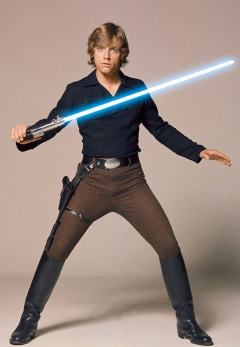

Luke Skywalker was a Tatooine farmboy who rose from humble beginnings to become one of the greatest Jedi the galaxy has ever known. Along with his friends Princess Leia and Han Solo, Luke battled the evil Empire, discovered the truth of his parentage, and ended the tyranny of the Sith. The sith were evil people from the daaark side he wanted to destroy him because he was the most powerful jedi in the galay. And discovered one of the questions he asked for so long he was his parents and it turned out to be darth vader. the evil lord he has been fighting for so long was his father this whole time.but he defeeats his father and keeps the entire galaxy in peace for a long time. finally there was peace in the galaxy. Or so we thought.
